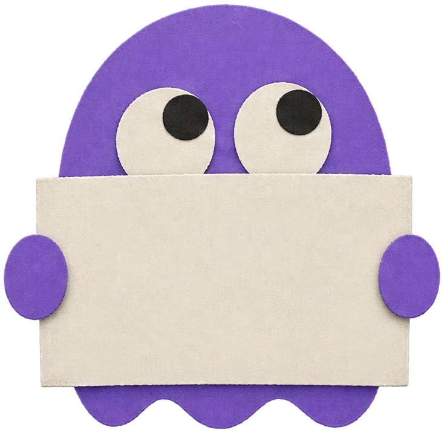

#009 · 2 sources
How Are Pringles Really Made?
- US patent 3,998,975 (P&G, Liepa, 1976)patents.google.com
- Revenue & Customs v Procter & Gamble UK [2009] EWCA Civ 407caselaw.nationalarchives.gov.uk
Weird questions. Serious answers.
Weird questions, serious answers. Whim asks, Dr. Fava checks the facts, and every claim is sourced.
The board · newest first
Click a card to watch the ShortTap a card to watch the Short
How we check
Dr. Fava checks each claim against the original: the study, the law, the patent. No source, no claim. 9 Shorts checked · 28 sources
#009 · 2 sources
#008 · 1 source
#007 · 4 sources
Next in the lab
Mon 16 Nov · 5 pm UK · in
Ask Whim: a question from the archive

Why Is Everest 29,002 Feet Tall?Some Shorts end with a vote. Comment A, B or C, and the winner becomes a future Short.
The archive
All 9 Shorts so far, newest first, each with its sources. Filter by topic or search for a word.
Body & physicsCar mysteriesEveryday scienceFood scienceNumber originsWeird laws


The topic map
Every Short is pinned to the science it shares with the others. Follow the red string: dye leads to chemistry, chemistry to chillies, chillies to birds. Point at a card to follow its thread.Swipe each row to see every Short on that thread.
Why Is It Illegal to Touch a Seal?Why Are Jeans Blue but White Inside?Why Are Chillies Hot? Not for BirdsWhy Is Your Breath Hot and Cold? Is Rainwater Collection Illegal?
Is Rainwater Collection Illegal? Why a Diesel Nozzle Won't Fit a Gas Car
Why a Diesel Nozzle Won't Fit a Gas Car Why Is Everest 29,002 Feet Tall?
Why Is Everest 29,002 Feet Tall?The team
Asks the questions. Whim never says a word: he holds up a sign with today's question, then reacts to the answer with his whole body.
Checks the answers. A dry, curious bean scientist and the only voice on the channel. Never without his clipboard of sources.
The best ones are the questions you were too embarrassed to ask. Send yours; Whim reads every one.